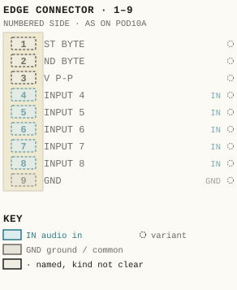
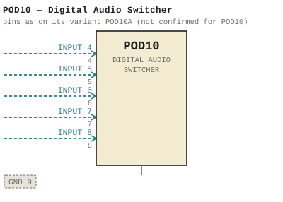

POD10 — Digital Audio Switcher
| Type | product |
| Series | PODS |
| Try it | simulator & front panel · download package (zip) |
| Earliest dated evidence | 2013|46 — dated folder |
| Evidence | in "WBS PRODUCTS 2013 - documents-export-2013-03-08" |
| Confidence | low (named by) |
| All years found | 2013|46, 2014|47 |
| Variants | POD10A |
| Folder | Products/PODS/POD10 |
Pictures


POD10.pinout.svg

POD10.connections.svg 2014 - POD10 - Front.jpg
2014 - POD10 - Front.jpg 2014 - POD10 - Rear.jpg
2014 - POD10 - Rear.jpgFront panel
Pinout & connections
No page of its own numbers POD10's contacts: these are its variant POD10A's, drawn faded — not confirmed for POD10.
pinout (SVG) · connections (SVG) · pins (JSON)
Pin evidence — 9 contacts
| Pin | Signal | Kind | Confidence | Read from | Source |
|---|---|---|---|---|---|
| 1 | ST BYTE | named, kind not clear | variant | table | 2014 - POD10A - MANUAL (2).docx, p. 1 |
| 2 | ND BYTE | named, kind not clear | variant | table | 2014 - POD10A - MANUAL (2).docx, p. 1 |
| 3 | V P-P | named, kind not clear | variant | table | 2014 - POD10A - MANUAL (2).docx, p. 1 |
| 4 | INPUT 4 | audio in | variant | table | 2014 - POD10A - MANUAL (2).docx, p. 1 |
| 5 | INPUT 5 | audio in | variant | table | 2014 - POD10A - MANUAL (2).docx, p. 1 |
| 6 | INPUT 6 | audio in | variant | table | 2014 - POD10A - MANUAL (2).docx, p. 1 |
| 7 | INPUT 7 | audio in | variant | table | 2014 - POD10A - MANUAL (2).docx, p. 1 |
| 8 | INPUT 8 | audio in | variant | table | 2014 - POD10A - MANUAL (2).docx, p. 1 |
| 9 | GND | ground / common | variant | table | 2014 - POD10A - MANUAL (2).docx, p. 1 |
Photos & scans (2)
| Year | File | |
|---|---|---|
| 2014|47 | 2014 - POD10 - Front.jpg | note |
| 2014|47 | 2014 - POD10 - Rear.jpg | note |